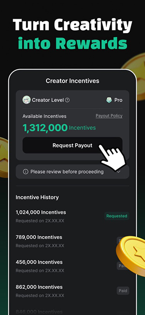

把 AI 角色原型嵌进内容创作流水线，我是这样用 MIRAI 的
做虚拟角色设定以前要翻三份文档、手动演对话，现在用 MIRAI 当原型工场——从灵感收集到社区发布，一条链串起来。
我每周要给短视频号产出 2~3 个虚拟角色设定，以前这件事散得要命：灵感写在便签纸上、角色设定填在 Excel 表格里、背景故事另开一个 Word 文档，写完设定表还要自己对着表格脑补"如果这个角色说话会怎么接"——相当于一个人分饰两角演对话。最糟的是做完了没法快速验证，得等朋友帮忙看才知道角色立不立得住。三个来回下来，一个角色从想法到能发出来至少耗两天，还不一定对路。
现在我把 MIRAI 嵌进了这条流水线，角色原型、组合测试、反馈收集全部收进同一个工作台。没接触过的可以去MIRAI官网看看，它是专门给 AI 角色爱好者做的原型创建和社区分享平台。前后对比很明确：少了两次手动复制 Excel 到 Word 的操作、省了至少一轮朋友帮忙验角色的等待时间、设定迭代的反馈周期从三天缩到半天。这套流程跑了一个多月，稳定产出了八组角色，下面拆解一下每个环节怎么接。
旧流程卡在哪
先把旧流程的断点说清楚，好对比新流程到底解决了什么。以前的链路是：灵感收集（各种便签）→ 结构化（Excel 填性格标签、说话风格、背景故事三栏）→ 对话测试（自己拿微信小号演对手）→ 朋友反馈（截图发过去等回复）→ 迭代修改。
卡的地方有三个。第一，Excel 里填的设定是静态的，"说话风格示例"列里写了三五句话，但你没法让它真说出来——得自己脑补。第二，单角色测试还好，要是想测两个角色凑在一起会不会有化学反应，得开两个小号同时演，麻烦到放弃。第三，反馈散在微信对话里，要整理成可操作的修改意见，还得再做一次手动搬运。
新流程怎么嵌 MIRAI
现在这条链是这样的：灵感收集（夸克网盘存参考图和关键词）→ MIRAI 里快速创建角色原型 → 群聊模式测组合化学反应 → 发布到社区拿公开反馈 → 把导入数据和评论导出进飞书多维表做迭代台账。MIRAI 插在了"原型创建"到"组合测试"这两个以前最耗时间的环节，前后衔接的工具其实都没变——还是夸克网盘存素材、飞书整理数据——只是中间换了一个工作台。
创建原型这一步，以前在 Excel 里填设定至少要半小时，现在从官方下载装完应用，进去直接创建角色，性格标签、背景故事、说话风格示例这些字段照填，但填完立刻就能跟它对话。我通常先跑三五轮日常对话："今天下班晚了有点累"、"帮我看看这张照片拍得怎么样"之类的，看回复有没有跑偏。设定里写了"说话带点傲娇"，但实际对话会不会真的傲娇、是哪一种傲娇——这些只有聊过才知道。
组合测试是以前根本不想做的环节，现在 MIRAI 的群聊模式把门槛降到了零。最多五个角色同时拉进一个群，AI 会自动模拟不同性格之间的互动。我上周刚测了一组"傲娇青梅竹马 + 温柔天降"的修罗场组合，两个角色会明里暗里互相较劲，我夹在中间选哪边都不对——这种化学反应自己演是演不出来的。群聊里生成的对话记录可以直接保存，后面做设定迭代的时候翻出来当参考素材。

实操细节：两个容易断链的环节
这条流程跑下来有两个地方最容易卡壳，提前说一下怎么处理。
第一个坑是角色设定填完直接发布。MIRAI 的社区发布功能很顺手，但不是创建完就立刻点"发布到社区"。我现在的习惯是至少跟新角色聊三五轮、换两三个不同场景测试一下，确认表现稳定、设定没跑偏再发。社区里角色太多，标题和简介是吸引点击的第一道关——写"便利店深夜班的画家女孩"比"温柔女孩"辨识度高得多。发布之后导入次数、点赞数这些数据会直接影响社区排名，所以刚发布的那两天我会自己多玩几轮、在评论区活跃一下，帮角色积累初始数据。
第二个坑是多设备切换触发风控。我有时候用手机、有时候用平板，MIRAI 同账号多设备登录是支持的，但短时间频繁切换会触发临时锁定。现在固定只用手机创建和测试角色、平板只用来翻MIRAI文档，不碰登录态。账号登录优先用邮箱，国内用户不受国际账号限制，验证码邮件即时送达；Apple 用户可以开"隐藏邮件地址"减少隐私暴露。
效果与边界
这套流程跑了一个月，实际效果是：单个角色从想法到能发布，从两天缩到四小时以内；角色组合测试从"做不动"到"每次发布前必测"；反馈收集从"散在微信对话里"到"自动整理进飞书多维表"。省下来的时间主要集中在原型创建和组合测试这两个环节——这也是 MIRAI 以前没有工具能替代的部分。
但这套流程也有不划算的边界。如果你只是偶尔玩玩 AI 角色、不需要迭代和发布，那整个流水线的成本就太高了——没必要为了一时兴起去搭飞书台账、社区发布这些环节。另外 MIRAI 的群聊上限是五个角色，超过的话就得拆成多条线分别测试，这时候手动整理反而比用 MIRAI 快。还有一点，社区发布的内容要符合规范，敏感词和违规设定别碰，不然发布之后会被撤回。
说到底，MIRAI 在这条流水线里扮演的就是一个"角色原型工场"的角色——快速创建、快速测试、快速拿到反馈，后面的迭代和整理还是靠飞书和夸克网盘这些老伙计接力。工具不用多，串得起来就行。这篇文章里提到的所有资料和参考链接我也同步到了三个代码仓库，方便不同平台的朋友查阅：GitHub、Gitee、GitCode。